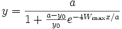

Contents |

Sigmoidal logistic function, type 2.
Reference: Seber, G. A. F., Wild, C. J. 1989. Nonlinear Regression. John Wiley & Sons, Inc. pp. 328 - 330
Number: 3
Names: y0, a, Wmax
Meanings: y0 = initial value, a = amplitude, Wmax = maximum growth rate
Lower Bounds: y0 > 0.0, a > 0.0, Wmax > 0.0
Upper Bounds: none
nlf_slogistic2(x,y0,a,Wmax)
FITFUNC\SLOGIST2.FDF
Growth/Sigmoidal